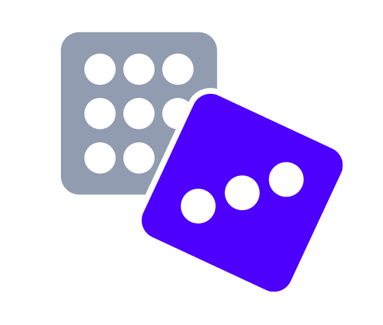
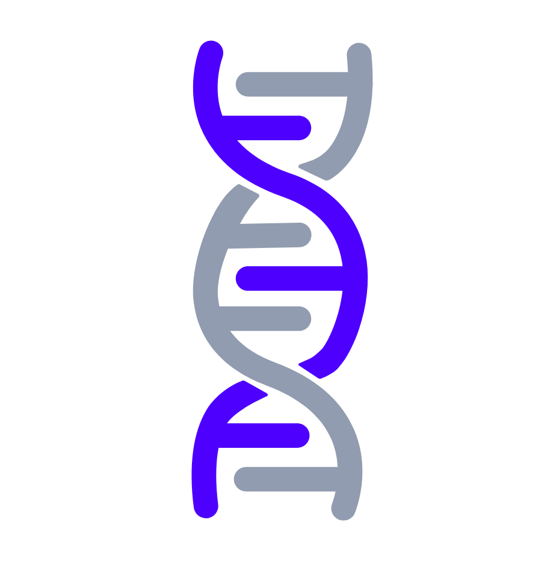

Laboratorio 1
Curso: Fundamentos de programación con R
1. Algoritmos y Pseudocódigo
Pon en práctica la creación de algoritmos empleando pseudocódigo con los siguientes ejercicios. Intenta resolverlos sin revisar el resultado. Una vez que hiciste tu mejor esfuerzo por resolver cada ejercicio, revisa el resultado correcto haciendo clic en “Mostrar el código” debajo de cada ejercicio.
1.1. Identificar un número par
En la sección R como calculadora se mostró que al utilizar Numero1 %% Numero2, el resultado impreso en consola es el residuo de la división de Numero1 entre Numero2.
Toma como pista lo siguiente: siempre que dividas un número par, el residuo de la división es 0.
Aplica lo aprendido para crear un pseudocódigo que te permita responder la pregunta ¿el número “N” es par?:
ooo
# Código en modo 1 (básico): ------------------- -
# Iniciar
# Recibir: N
# Evaluar: si el residuo de N/2 es igual a 0, entonces imprimir "es par", si es diferente de 0, imprimir es impar
# Fin
# Código en modo 2 (avanzado): ------------------- -
# Iniciar
# Recibir: N
# if N %% 2 == 0
# | print("es par")
# | else
# | | print("es impar")
# Fin1.2. Contabilizar las Guaninas en una secuencia de ADN
El ADN contiene 4 tipo de bases nitrogenadas: guaninas (G), timinas (T), adeninas (A), citocinas (C). Una secuencia de ADN, en consecuencia, estará compuesta por cadenas de estas cuatro moléculas (letras).
Crea un algoritmo que contabilice las guaninas (G) de una cadena de ADN.

ooo
# Código en modo 1 (básico): ------------------- -
# Iniciar
# Recibir: Cadena_ADN
# Crear: un objeto "CONTEO" vacío que reciba el conteo de G.
# Evaluar: elemento por elemento si es o no es G. Sumar el valor 1 al objeto "CONTEO" cada vez que encuentra una G en la secuencia. Hacer esto hasta el último elemento de la secuencia.
# Mostrar: el valor de "CONTEO"
# Finalizar
# Código en modo 2 (avanzado): ------------------- -
# Iniciar
# Recibir: Cadena_ADN
# Probar el siguiente if elemento a elemento
# | if (elemento == "G")
# | | CONTEO = CONTEO + 1
# | else
# | | CONTEO = CONTEO
# Imprimir valor: "CONTEO"
# Finalizar1.3. Cálculo de la Tasa Metabólica Basal de una persona
La tasa metabólica basal (TMB) es la cantidad mínima de energía que necesita tu cuerpo para sobrevivir realizando las funciones básicas, tales como respirar, parpadear, filtrar la sangre, regular la temperatura del cuerpo o sintetizar hormonas.

Para su cálculo se emplea la tasa metabólica (TM):
- Para hombres:
\[ \text{TM} = 10*\text{peso} + 6.26*\text{altura}-5*\text{edad}+5 \] - Para hombres:
\[ \text{TM} = 10*\text{peso} + 6.26*\text{altura}-5*\text{edad}-161 \]
Y luego se multiplica dicho valor por una constante definida según el nivel de actividades que realiza una persona durante la semana:
\(\text{TMB} = \text{TM} * 1.2\) para personas totalmente sedentarias (0 días de ejercicio semanal).
\(\text{TMB} = \text{TM} * 1.375\) para personas ligeramente activas (1-3 días de ejercicio/semana).
\(\text{TMB} = \text{TM} * 1.55\) para personas moderadamente activas (4-5 días de ejercicio/semana).
\(\text{TMB} = \text{TM} * 1.725\) para personas muy activas (6-7 días de ejercicio/semana).
\(\text{TMB} = \text{TM} * 1.912\) para personas extremadamente activas (6-7 días de ejercicio/semana pero bajo régimen de entrenamiento doble).
Crea el pseudocódigo necesario para automatizar el cálculo de TMB, recibiendo como información los argumentos: peso (numeric), altura (numeric), edad (numeric), dias_entrenamiento (numeric), y doble_ejercicio (logic). Este último es un argumento lógico que probará si la persona es extremadamente activa.
Toma en cuenta que para aplicar el factor multiplicativo de doble_ejercicio == TRUE, también se debería cumplir que dias_entrenamiento sea 6 o 7. De no ser así, pudo haber ocurrido un error de tipeo. Se debe mostrar el mensaje de error “Comprueba las variables de entrada”.
ooo
# Código en modo 1 (básico): ------------------- -
# Iniciar
# Recibir variables:
# ----- peso, altura, edad, sexo, dias_entrenamiento, doble_ejercicio
# Calcular:
# ----- TM con las variables peso, altura, edad
# Evaluar:
# ----- si sexo es hombre, entonces se actualiza el TM = TM + 5
# ----- si sexo es mujer, entonces se actualiza el TM = TM - 161
# Evaluar:
# ----- si doble ejercicio es TRUE y días_entrenamiento igual a 6 o 7, entonces multiplicar TM*1.912.
# Evaluar:
# ----- si doble ejercicio es FALSE, aplicar el factor multiplicador condicionalmente respecto a dias_entrenamiento.
# Evaluar:
# ----- si no se cumple nada de lo anterior, imprimir error "Comprueba las variables de entrada".
# Fin
# ----------------------------------------------------------------- -
# ----------------------------------------------------------------- -
# ----------------------------------------------------------------- -
# Código en modo 2 (avanzado): ------------------- -
# Iniciar
# Recibir: peso, altura, edad, dias_entramiento, doble_ejercicio
# Calcular: TM <- 10 * peso + 6.26 * altura - 5 * edad
# Evaluar:
# if sexo == "hombre"
# | TM = TM + 5
# | else if sexo == "mujer"
# | | TM = TM - 161
# Evaluar:
# if doble_ejercicio == TRUE & dias_entrenamiento %in% 6:7
# | return TM*1.912
# | else if doble_ejercicio == FALSE
# | | definir qué multiplicador usar en base a dias_entrenamiento
# | | else
# | | | imprimir error "Comprueba las variables de entrada"
# Fin1.4. Función para hacer EDA (Exploratory Data Analysis)
Un análisis de exploración de datos (EDA, siglas en inglés) es un procedimiento para inspeccionar la naturaleza y estadísticos descriptivos de cada columna en una base de datos (tabla). Estos análisis pueden ser univariados (describiendo estadísticamente columna por columna), o bivariados (describiendo la relación entre pares de columnas).
Nos enfocaremos en EDA univariado. Una forma sencilla de realizarlo es aplicar gráficas estadísticas descriptivas dependiendo del tipo de variable que aloja una columna dada. Para una columna cuyos datos sea numéricos, se preferirá realizar un gráfico de función de densidad para visualizar la distribución de los mismos. Para una columna con datos categóricos, se realizará un gráfico de barras.
Crea el pseudocódigo de un algoritmo que ayude a realizar una gráfica por columna, dependiendo de su tipo.
ooo
# Código en modo 1 (básico): ------------------- -
# Iniciar
# Recibir: Base de datos
# Crear: un objeto vacío "LISTA" que almacene los gráficos resultantes
# Evaluar: columna por columna la siguiente condición:
# Si una columna es numérica, hacer gráfico de función de densidad;
# Si una columna es categórica, hacer gráfico de barras.
# Colocar el gráfico resultante dentro del objeto "LISTA".
# Mostrar: todos los gráficos del objeto LISTA.
# Finalizar
# Código en modo 2 (avanzado): ------------------- -
# Iniciar
# Recibir: Base de datos
# Probar el siguiente if columnas por columna
# | if (columna es numérica)
# | | Graficar: función de densidad
# | | Almacenar: el gráfico en LISTA
# | else if (columna es categórica)
# | | Graficar: función de densidad
# | | Almacenar: el gráfico en LISTA
# Imprimir: todos los gráficos del objeto LISTA.
# Finalizar2. Nota adicional
Como habrás notado en las respuestas ofrecidas en este laboratorio, se suele trabajar creando objetos vacíos que almacenen los resultados (por ejemplo: cuarta línea en la respuesta de los pseudocódigos 1.2 y 1.4). Recuerda que estás lidiando con información, y esta debe estar guardada de alguna manera y bajo alguna estructura de datos en nuestra computadora.
Felicidades
Culminaste el primer módulo y ya conoces el trabajo básico con Algoritmos. En el siguiente módulo aprenderás sobre estructuras de datos para completar la ecuación:
\[ \text{Algoritmos} + \text{Estructuras de datos} = \text{Programas} \]